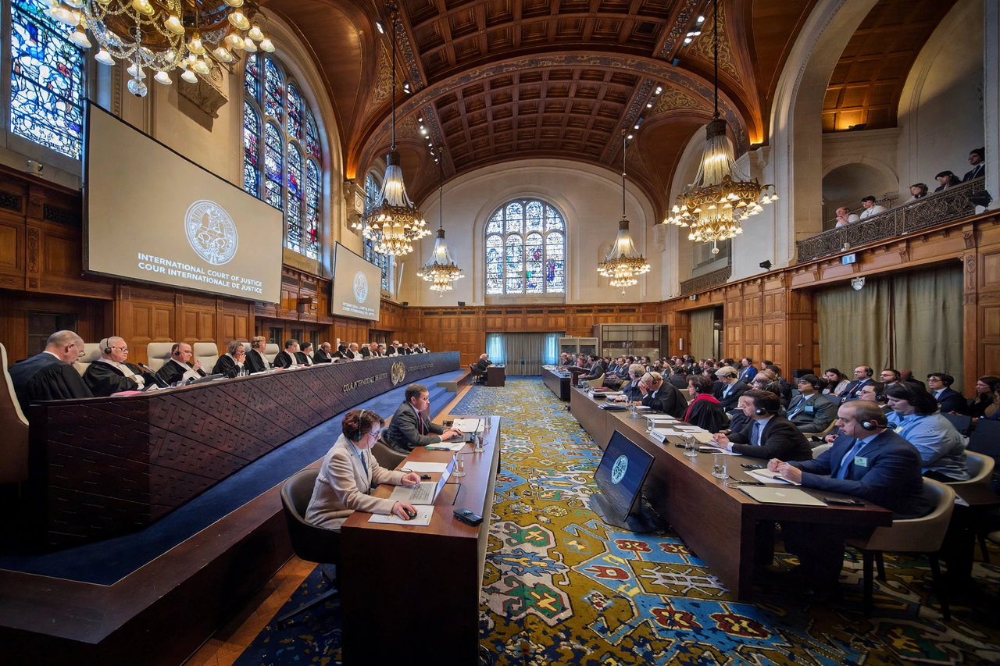

A contentious case is a legal dispute before an international court in which states are parties and seek a binding judgment resolving their disagreement. It is one of the two forms of proceedings before the International Court of Justice, the other being the advisory opinion procedure, which produces non-binding opinions.
Only states may be parties in contentious cases before the ICJ, and the Court's jurisdiction depends on the consent of the states concerned. Consent may be given by a special agreement, by a compromissory clause in a treaty, or by a declaration accepting the Court's compulsory jurisdiction under the "optional clause" of its Statute.
Proceedings have written and oral phases: the parties file memorials and counter-memorials, after which public hearings are held. The Court may indicate provisional measures to preserve the parties' rights while the case is pending. Judgments are final, without appeal, and binding on the parties; the UN Security Council may be called upon to give effect to a judgment under Article 94 of the UN Charter.
Landmark contentious cases include Nicaragua v. United States (1986), Legality of Use of Force cases arising from the Kosovo conflict, the Whaling in the Antarctic case (2014), and South Africa v. Israel concerning the Genocide Convention, filed in 2023.